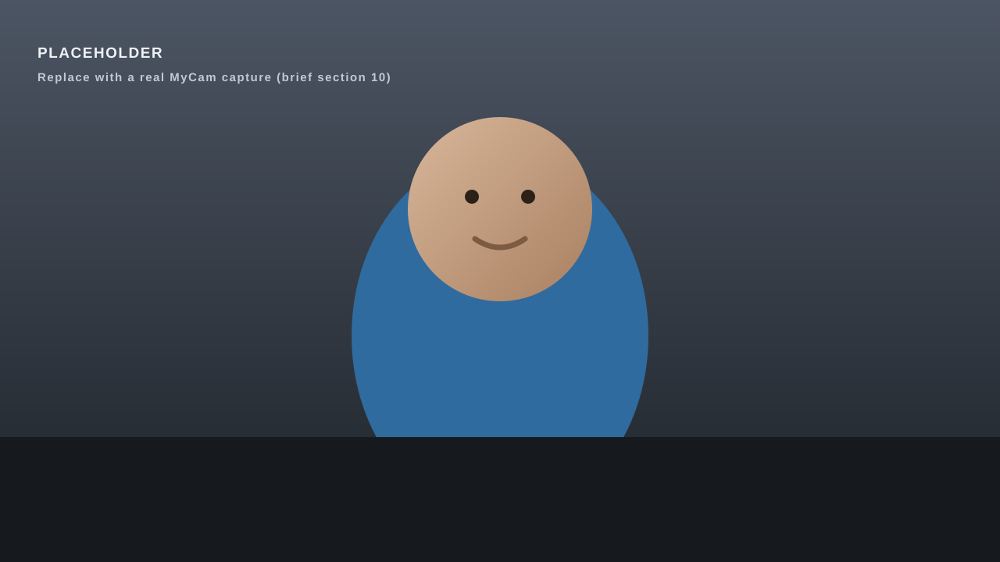
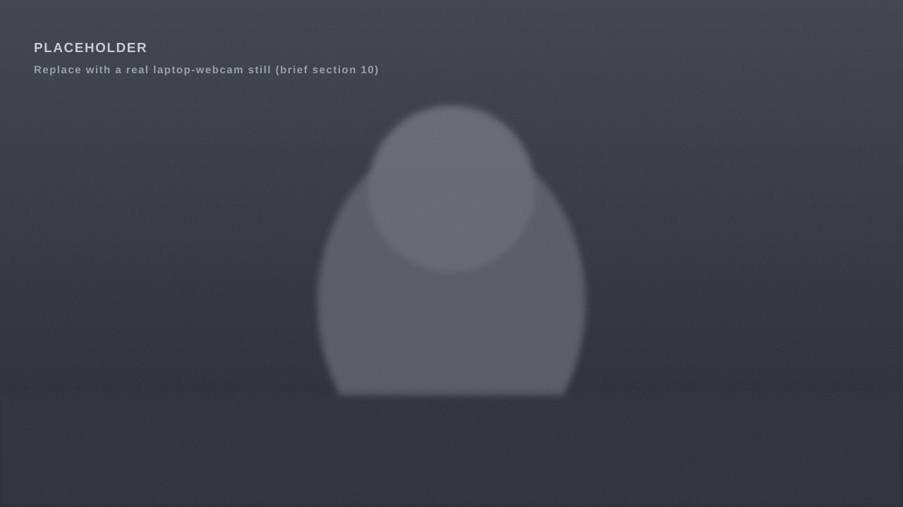

00 / Phone to webcam
00:00:00
Your phone
is a better camera
than your laptop.
MyCam makes Windows see it as a webcam. Plug in a cable or go wireless, then pick MyCam in Zoom, Teams, Meet, OBS or Discord.
On a phone? MyCam installs on your PC.
01 / The difference
Same call.
Different camera.
A laptop webcam is a tiny sensor behind a plastic lid. The camera in your pocket has a bigger sensor, a real lens and years of image processing. Drag to compare.

Phone via MyCam

Laptop webcam
Drag, or use the arrow keys.
02 / How it works
Three steps.
Once.
-
Step 01
Install on the PC
One installer. It registers the MyCam camera with Windows and adds a tray icon. No account, no driver hunting.
-
Step 02
Connect the phone
Android: plug in the cable and tap Always once, or pair over Wi-Fi by scanning a QR code. iPhone: scan the code and Safari opens the camera page — nothing to install.
-
Step 03
Pick MyCam
In Zoom, Teams, Meet, OBS, Discord or the Camera app, choose MyCam as the camera. The phone's camera turns on only while an app is using it.
03 / Compatibility
It's just
a webcam.
Everything sees it.
MyCam registers as a real camera through the Windows Frame Server, the same path your built-in webcam uses. Anything that can open a camera can open MyCam — no plugin, no per-app setup.
Works in Zoom, Microsoft Teams, Google Meet, OBS Studio, Discord, the Windows Camera app, Chrome, Edge, Firefox and Slack.
04 / What you get
Every control
on the PC.
The phone stays in your pocket or on a stand. You change the camera, resolution, frame rate, zoom and torch from the MyCam window on Windows — and every option comes from what your phone actually reports it can do.
Wired over USB
Plug the phone in and it works. MyCam uses Android Open Accessory, so there's no Developer Options, no USB debugging and no ADB. The cable carries the video, so there's nothing to go wrong on your Wi-Fi.
Wireless over Wi-Fi
Scan the QR code on the PC once and the phone pairs itself. The session is encrypted, the pairing is remembered, and a phone on the cable always takes priority over a wireless one.
iPhone through Safari
There's no app to install on an iPhone. The PC serves a page over HTTPS; you scan a QR code, tap Start, and the iPhone encodes video in hardware and sends it over the local network. Add it to your home screen and it reconnects without the code.
Front and back cameras
Switch between them mid-call from either end. Turn the phone any way you like, including upside down — the picture stays upright for everyone else.
Pause that actually pauses
Pause from the phone, its notification or the PC tray, and apps see a "Camera paused" picture instead of you. The camera also switches itself off while Windows is locked.
Quality, frame rate, zoom, torch
Up to 4K, with 30, 60 or 120 fps where the phone supports it — many phones only manage 30 at 4K, and MyCam only offers what yours reports. Zoom, brightness, focus and the torch are on the PC too, each with an Auto option.
05 / See the app
One screen.
Three places.
The PC app, the Android app and the iPhone page are the same screen in three frames. It's live below — not a screenshot. Watch it connect, stream and pause.
Illustration of the app
Camera
- Back camera
- Front camera
Quality
- 1080p · 30 fps
- 4K · 30 fps
Waiting for a phone
Camera paused
Not connected
MyCam
Not connected
Plug this phone into a PC running MyCam.
Pause the camera
Turns the camera off until you resume, here or on the PC.
Camera
- Back camera
- Front camera
The camera turns on only while an app on the PC is using it.
Paused
The camera is off. Apps see a "Camera paused" picture.
Camera paused
The camera turns back on if an app on the PC still uses it.
Resolution, frame rate, zoom and torch are chosen on the PC.
06 / Install and trust
Not signed yet.
Here's the truth.
MyCam doesn't have a code-signing certificate yet, so Windows will show "Windows protected your PC" the first time you run the installer. That warning is about the missing signature, not about anything found in the file. Here's exactly what to expect, and how to check the download yourself.
A certificate is in progress. Until it lands, verify the hash — the number below comes straight from the GitHub release.
- Installer
- MyCam-Setup-1.4.3.exe
- Size
- 12.1 MB
- Version
- v1.4.3
- SHA-256
- 33dd90260e1d8bb2b0ab35726bcfcbf59d18698ecb5a71c126a9ae38c19737c6
Verify in PowerShell
Get-FileHash .\MyCam-Setup-1.4.3.exe -Algorithm SHA256Getting past SmartScreen
- Run the installer. Windows shows "Windows protected your PC".
- Click More info.
- Click Run anyway.
Prefer not to? Build it from source instead — it's MIT, and the build steps are in the repo.
What the installer does
- Registers the MyCam camera with Windows.
- Installs the UsbDk driver if it isn't already there — it's needed to switch an Android phone into accessory mode. Signed by Red Hat, and the download is hash-checked.
- Adds a Windows Firewall rule for the iPhone page, on private networks only.
- Offers to start MyCam with Windows. Your choice.
- Uninstalls from Settings → Apps like anything else.
07 / Questions
Straight
answers.
Does it work on Windows 10?
No. MyCam uses a Windows 11 API for virtual cameras
(MFCreateVirtualCamera) that Windows 10 doesn't have.
Windows 10 support would need a different, older camera path — it's on
the list, not built.
Is there a Mac version?
No. MyCam is a Windows 11 app. macOS already has Continuity Camera built in for iPhones.
Do I need Developer Options or ADB?
No. That's the whole point of the USB path. Android asks once whether to open MyCam when you plug in; tick Always and you're done. Windows asks for admin once per new phone, to give the phone's accessory mode its built-in driver.
Is my video sent anywhere?
No. Video goes from your phone to your PC — over the cable, or over your own network — and nowhere else. There's no account, no server and no telemetry. Wireless sessions are encrypted, and the PC stores only a hash of each paired device's token.
What about Windows 11 N editions?
N editions ship without the media features MyCam needs to decode video. Install Microsoft's Media Feature Pack and it works.
Can I still transfer files over the cable?
Not while MyCam is running. Any Android phone you plug in switches to webcam mode, which takes the place of file transfer. Exit MyCam from the tray and the cable behaves normally again.
Does it drain the battery?
Over USB the phone charges while it streams. Wirelessly it does use power, and the phone can get warm — there's a "Dim the screen" option to help, and MyCam warns you if it heats up.
What does it cost?
Nothing. It's free and open source under the MIT license. No trial, no watermark, no upgrade.